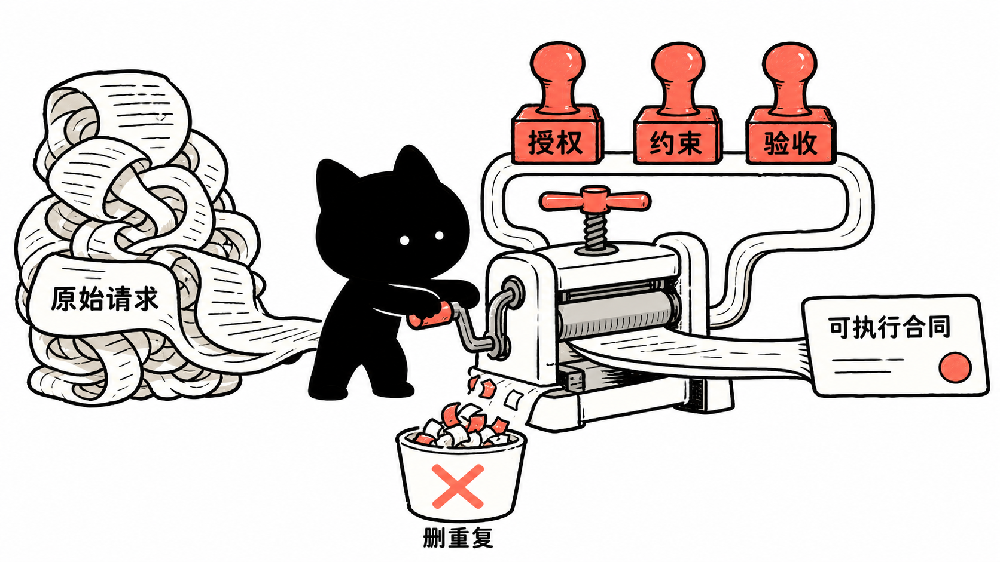

来源边界
先分清三层
以 OpenAI 的 （外部链接）GPT-5.6 prompting guidance 和 （外部链接）GPT-5.6 model guide 为准。
把 API 侧的提示建议翻成 Codex 任务合同：目标、成功标准、授权边界、工具与验证、输出和停止规则。
（外部链接）WhoJay0609/refine-user-prompt 不是 OpenAI 官方 skill；它把上述原则固化为“先展示重构提示词，再按授权执行”的工作流。
官方指南解读
官方指南到底在说什么
核心可以压缩成一句话：描述终点和验收，保留真正的硬边界，减少不改变行为的过程规定。 OpenAI 报告，在一组内部 coding-agent eval 中，较精简的 system prompt 让得分约提高 10–15%，同时总 token 下降 41–66%、成本下降 33–67%；官方也明确提醒这些范围只是方向性结果，必须用自己的代表性任务复测。

Codex 写法
把建议翻成 Codex 任务合同
复杂任务不需要固定套满所有栏目。先写结果，再只加入会改变行为的约束；缺少的关键事实会改变范围或副作用时，要求 Codex 只问最小问题。
目标：更新当前仓库的安装指南，使新用户能完成首次配置。
成功标准：
- 命令与当前代码一致
- 站内链接无断链
- 最窄相关检查通过
约束与授权：
- 只修改文档和对应验证
- 保留无关工作区改动
- 推送、发布或扩大范围前先确认
输出：列出改动文件、验证结果和剩余阻碍。
停止规则：如果仓库事实与官方资料冲突，报告冲突并停止猜测。第三方 Skill
refine-user-prompt 是什么
这个 skill 接收一段原始请求，先提取目标、事实、范围、授权、证据、输出和停止条件，再删除重复或无效脚手架。它必须先把可复制的重构提示词展示给用户，然后才根据原始授权决定停止、回答、执行，或为真正需要持久状态的工作创建 Codex Goal。
- 保真优先不静默增加事实、权限、交付物、截止时间或质量承诺。
- 按复杂度组织简单请求保持一句话或短列表；只有复杂任务才加入分节合同。
- 最小澄清只有歧义会实质改变结果、范围、副作用或证据标准时才提问。
- 建议不等于切换模型、reasoning effort 和 Goal 模式都是建议；skill 不会声称自动切换当前配置。
执行合同
四种执行模式
refine_only用户只要润色、计划或明确说不要执行展示重构提示词后停止不改文件refine_then_answer有界、无副作用的解释或总结先展示提示词，再直接回答不扩大实现权限refine_then_execute普通、已授权的修改或生成任务先展示提示词，再执行本地范围内工作保留审批闸门refine_then_create_goal跨多阶段、可恢复、需长期跟踪且执行已获授权先展示提示词，再创建 GoalGoal 目标默认使用完整重构提示词模型建议
模型与思考强度怎么选
该 skill 按任务歧义、依赖深度、工具和验证负担、错误后果、延迟与成本来建议一个默认配置。它遵循当前官方模型分层：gpt-5.6-luna 面向高效、高吞吐任务，gpt-5.6-terra 是日常平衡选择，gpt-5.6-sol 面向旗舰质量；gpt-5.6 alias 路由到 gpt-5.6-sol。
medium 是平衡起点，延迟敏感任务可测试 low；只有代表性 eval 证明有收益时才升到 high 或 xhigh，max 只留给最难的质量优先工作。先补成功标准、依赖规则、工具路由和验证闭环，再考虑提高 reasoning effort。
授权边界
润色不会自动扩大权限
“把 prompt 写完整”不等于获得新的行动授权。回答、解释、审查、诊断和计划默认只读；用户明确要求修改、构建或修复时，才执行范围内的本地变更和非破坏性验证。外部写入、删除、购买、高成本任务或实质扩域仍要单独确认。
安装与调用
安装和调用
git clone https://github.com/WhoJay0609/refine-user-prompt.git
cp -R refine-user-prompt/skills/refine-user-prompt ~/.codex/skills/安装后开启一个新的 Codex 任务，让 skill catalog 重新加载。显式调用时，把原始输入放在 skill mention 之后：
$refine-user-prompt
请重新梳理下面的用户输入，保留原意和授权边界：
[原始输入]真实实例
真实实例：润色后执行文档更新
本页本身就是一次 refine_then_execute：原始请求要求“润色并执行”，所以先展示了包含官方资料、删除范围和验证条件的重构提示词，再读取官方页面、更新站点来源文件、重新生成导航与搜索资产，并以 make check 和旧词残留扫描收口。没有创建 Goal，因为这是一轮可以在当前任务中完成的有界文档修改。
$refine-user-prompt 润色并执行：
在 Codex 使用指南中解读 GPT-5.6 prompting guidance，
介绍 WhoJay0609/refine-user-prompt，并移除旧的本机路由专题。使用边界
什么时候不该用
如果用户已经给出清楚、短小、可直接执行的任务，额外重构可能只会增加往返。若目标是自动评测大量 prompt、训练优化器或改写应用级 system prompt stack，也应使用专门的 eval 与迁移流程，而不是把单次任务润色 skill 当成自动优化框架。